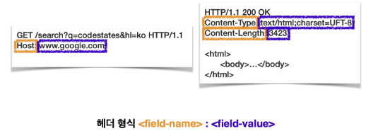

HTTP 메시지는 헤더와 바디로 구분할 수 있다.
HTTP 바디에서는 데이터 메시지 본문(Message body)을 통해서 표현(Representation) 데이터를 전달한다.
여기서 데이터를 실어 나르는 부분을 페이로드(Payload)라 한다.
HTTP 헤더는 HTTP 전송에 필요한 모든 부가정보를 담기 위해 사용한다.
표현은 요청이나 응답에서 전달할 실제 데이터를 뜻하며 표현 헤더는 표현 데이터를 해석할 수 있는 정보를 제공한다.
표현 헤더는 요청, 응답 둘 다 사용하며 표현 데이터의 형식, 압축 방식, 자연 언어, 길이 등을 설명하는 헤더이며 아래와 같이 대소문자 구분이 없는 key-value 형식을 따른다.

Content-Type은 표현 데이터의 media type을 나타내기 위해 사용된다.
Content-Encoding은 표현 데이터의 media type을 압축하기 위해 사용된다.
Content-Language는 청중을 위한 언어를 설명하기 위해 사용되는데 사용자가 선호하는 언어에 따라 사용자를 구분하도록 해준다.
Content-Length는 수신자에게 보내지는 바이트 단위를 가지는 표현 데이터의 크기를 나타낸다.
요청(Request)과 응답(Response)에서 사용되는 주요 헤더에 대한 설명
요청에서 사용되는 헤더로 From, Referer, User-Agent, Host, Origin, Authorization에 대한 설명
From 요청 헤더는 유저 에이전트의 이메일 정보를 나타낸다.
검색 엔진에서 주료 사용하며 일반적으로 잘 사용하지는 않는다.
Referer 요청 헤더는 이전 웹 페이지 주소를 나타낸다.
현재 요청된 페이지의 이전 웹 페이지 주소로 Referer를 사용하면 유입경로를 수집 가능하다.
User-Agent 요청 헤더는 유저 에이전트 애플리케이션 정보를 식별할 수 있도록 하는 문자열이다.
User-Agent를 통해 어떤 종류의 브라우저에서 장애가 발생하는지 파악할 수 있다.
Host 요청 헤더는 요청한 호스트의 도메인 정보를 나타낸다.
Host 요청 헤더는 필수 헤더이며 하나의 서버가 여러 도메인을 처리해야 할 때 호스트 정보를 명시하기 위해 사용한다.
Origin 요청 헤더는 서버로 POST 요청을 보낼 때 요청을 시작한 주소를 나타낸다.
요청을 보낸 주소와 받는 주소가 다르면 CORS 에러가 발생한다.
Authorization 요청 헤더는 인증 토큰을 서버로 보낼 때 사용하는 헤더이다.
응답에서 사용되는 헤더로 Server, Date, Location, Allow, Retry-After에 대한 설명
Server 헤더는 요청을 처리하는 Origin 서버의 소프트웨어 정보를 포함하고 있다.
Date 헤더는 메시지가 발생한 날짜와 시간을 포함한다.
Location 헤더는 페이지를 리디렉션할 URL을 나타낸다.
3xx 또는 201 상태 응답과 함께 제공될 때만 Location 헤더가 의미가 있다.
Allow 헤더는 허용 가능한 HTTP 메서드를 나열한다.
Retry-After 헤더는 유저 에이전트가 다음 요청을 하기까지 기다려야 하는 시간을 나타낸다.